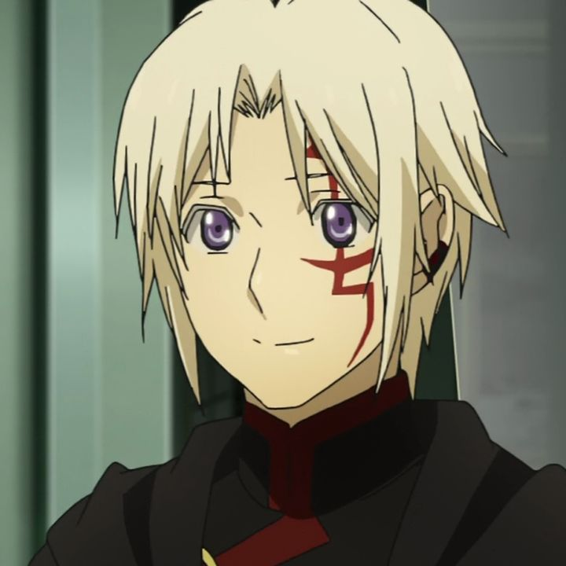
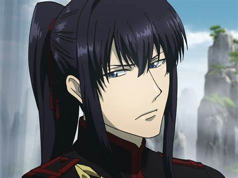
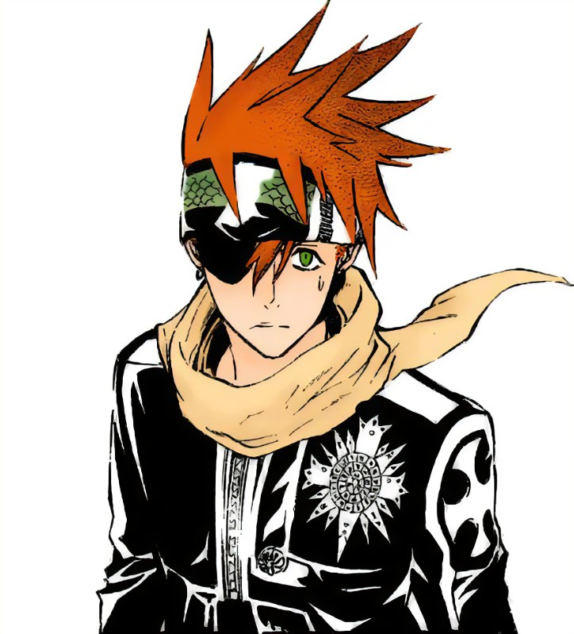
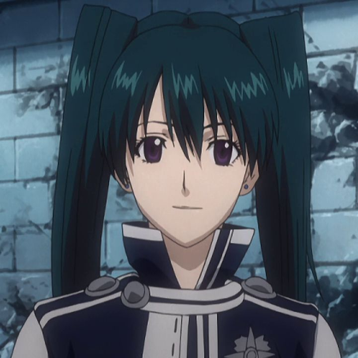
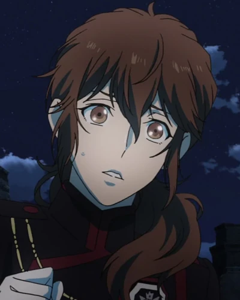

This are the main characters in the series:

Allen Walker (アレン・ウォーカー, Aren Wōkā?) is the main protagonist of D.Gray-man. Allen is a former Exorcist and a former member of the European Branch of the Black Order. He is the adoptive son of Mana Walker, and the former apprentice of Cross Marian.

Yu Kanda (神田ユウ, Kanda Yū) is a Second Exorcist, a member of the European Branch of the Black Order, and a former member of the Asian Branch. As a disciple of General Froi Tiedoll, Kanda belongs to Tiedoll Unit.

Lavi (ラビ , Rabi) is the current alias of the current chosen successor of the Bookman Clan generally shortened as Bookman Junior. He is one of the main characters of D.Gray-Man and an Exorcist and member of the European Branch of the Black Order, though this affiliation only exists so he and his mentor, Bookman, can record the world history as it unfolds. "Lavi" is his 49th alias, with "Deak" (ディック) being his previous one. Lavi belongs to Marian Unit.

Lenalee Lee (リナリー・リー, Rinarī Rī) is one of the main characters of D.Gray-Man. She is an Exorcist and member of the European Branch of the Black Order. Lenalee was the assistant Branch Chief of the European Branch. She is also the younger sister of the Black Order's Chief Officer, Komui Lee. She was previously a member of Marian Unit, but she is now a member of Nine Unit.

Miranda Lotto (ミランダ・ロットー, Miranda Rottō) is an Exorcist and member of European Branch of the Black Order. In her hometown, she was notorious for having "bad luck," and has had over one hundred jobs, all of which she was fired from because of her persistent clumsy and socially awkward nature. Miranda, during her time as an Exorcist, eventually joined the Socalo Unit.
Arystar Krory III (アレイスター・クロウリー三世, Areisutā Kurōrī Sansei) sometimes romanized as Aleister Crowley III is an Exorcist and member of the European Branch of the Black Order. A baron by birth, he spent a large portion of his life hidden in his grandfather's castle, and was believed by the members of a nearby village to be a "vampire." He was also the lover of an Akuma named Eliade that he eventually had to kill. He decided to ride off to give a meaning to her death and to his life. He is currently the disciple of Winters Socalo making him part of Socalo Unit.